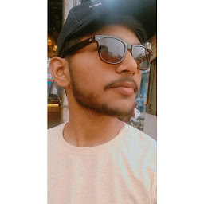

Contact: abhishekpandey8520@gmail.com
LinkedIn Profile: https://www.linkedin.com/in/abhishek-pandey-625803214
Github: http://github.com/abhishekpandey

|
Greetings! I am Abhishek Pandey, and my journey is a testament to the transformative power of determination and self-discovery. The realization of education's pivotal role struck me during my 7th-grade years, propelling me from a phase of uncertainty to one of unwavering commitment to academic excellence.
From an initial struggle, I transitioned to consistently securing Good grades in all my exams starting from the 8th grade. This remarkable transformation laid a rock-solid foundation for my future endeavors, instilling in me the belief that with persistence and hard work, any goal is attainable.
Fueling my journey is an insatiable passion for electronics and an innate curiosity for computer science. This potent combination guided my academic choices, leading me to pursue a degree in Electronics and Communication Engineering. This field perfectly encapsulated my interests and aspirations, providing me with the platform to explore the intricate world of technology.
Simultaneously, I delved deep into the realm of programming, mastering essential languages like HTML, CSS, and JavaScript. My fascination with problem-solving led me to hone my skills in Data Structures and Algorithms (DSA), an area I found intellectually stimulating and practically valuable. These technical skills, combined with my dedication, equipped me to tackle complex challenges and turn them into opportunities.
Beyond the structured confines of academics, my love for electronics remains a driving force. I've embarked on personal projects that fuse my expertise in electronics with my programming prowess. This amalgamation of interests not only fuels my creativity but also enhances my ability to innovate and envision novel solutions.
However, my journey doesn't stop here. My ultimate aspiration is to channel the synergistic potential of my proficiency in both electronics and computer science. I envision myself making meaningful contributions to a dynamic, product-based IT company. By merging cutting-edge technologies with creative thinking, I aim to craft solutions that redefine the technological landscape and steer its evolution.
I invite you to explore my portfolio, a curated collection that showcases not only my academic accomplishments and technical aptitude but also projects that emanated from sheer passion and dedication. From coding projects that demonstrate my proficiency to electronics endeavors that highlight my creativity, my portfolio is a reflection of my holistic approach to learning and innovation.
As I continue to evolve and chase my dreams, I'm genuinely excited about the multitude of possibilities that lie ahead. The world of technology is ever-evolving, and I am committed to staying at the forefront of innovation, pushing boundaries, and creating a lasting impact.
In conclusion, my journey from realizing education's importance to mastering electronics, computer science, and programming has been one of self-discovery, perseverance, and continuous growth. With a strong academic foundation and a fervent passion for technology, I am poised to make significant contributions to the future of the IT landscape.
Let's connect, collaborate, and explore the limitless potential of technology together.
Warm regards, Abhishek Pandey |
Bachelor of Technology in Electronic and Communication Engineering,Lakshmi Narain College of Technology
HFC Senior Seconday School
working on it....